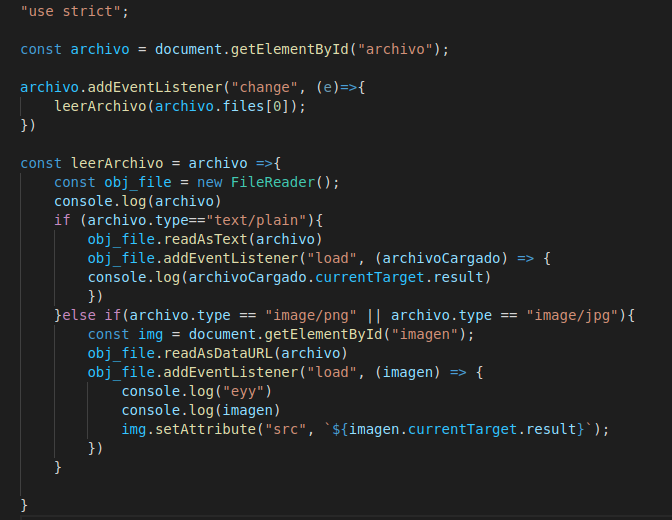

Lección 13 - FileReader
Definición: FileReader es un objeto de JavaScrip que trabaja con la letura de archivos.
Metodos del Objeto
-
ReadAsText() Lee el archivo y lo convierte en texto, el metodo no devuelve nada, cabe destacar que tiene que ser impreso
desde el evento load, por medio del objeto que recibe la funcion del evento.
-
readAsDataURL() Lee una URL, que puede ser contenida por un archivo
Eventos del Objeto
-
load: Devuelve información de si el archivo se cargo correctamente. Para imprimir el resultado de leer el archivo,
este evento recibe un parametro e, y el resultado se encuentra en: e.currentTarget.result
Codigo
